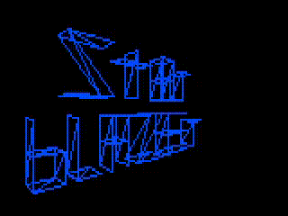

Starblazer On-Line Internet Web Site

Welcome to the Starblazer Internet Presence! Stay here for the latest news on Starblazer: 2000 A.D. (Take a Trip You'll Never Forget Into the Space Age of the 21st Century!), Starblazer II, and more.
Click here for the history of Starblazer: 2000 A.D.!
Click here to download Starblazer: 2000 A.D. for Windows 95/NT (i386) / Windows NT (MIPS) / Windows XP+ (AMD64)
Click here to download Starblazer: 2000 A.D. for Windows source code
Email the Webmaster